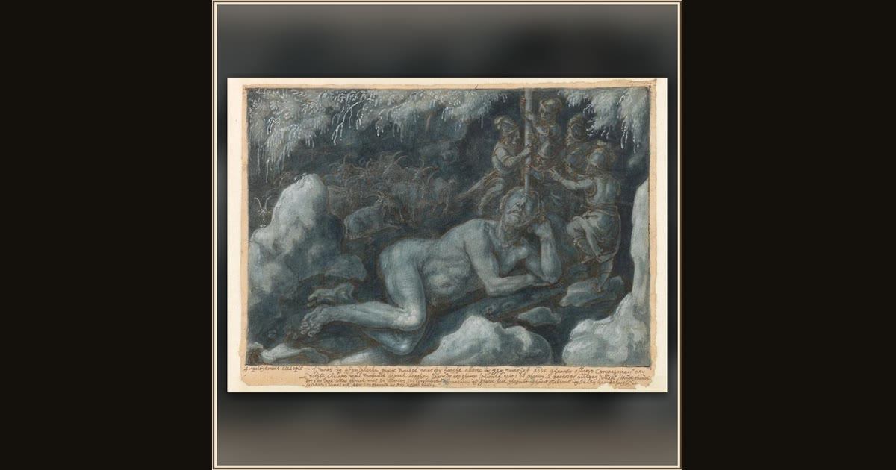

Ulysses and the Cyclops Polyphemus
Johannes Stradanus · c. 1600–1605 · Museum Boijmans Van Beuningen · Rotterdam, Netherlands
In ink and moon-blue wash, Ulysses and his men hoist the great stake for the clever trick that will blind the sleeping man-eating giant. Explore its place in Book IX of the Odyssey.